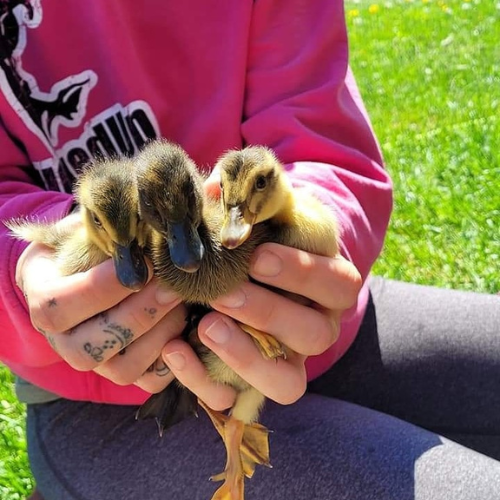
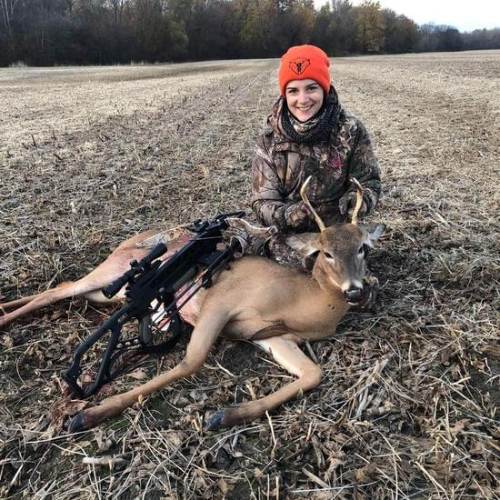
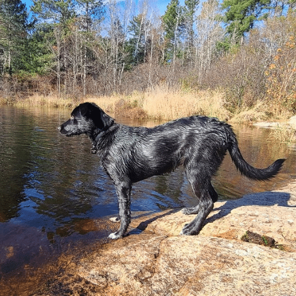
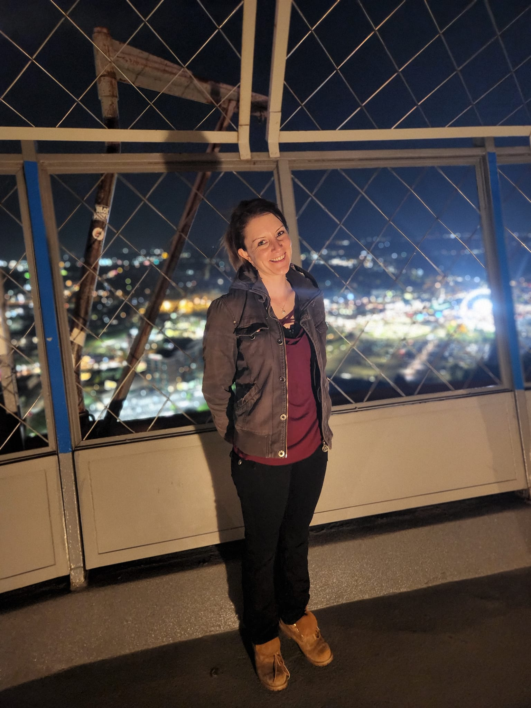
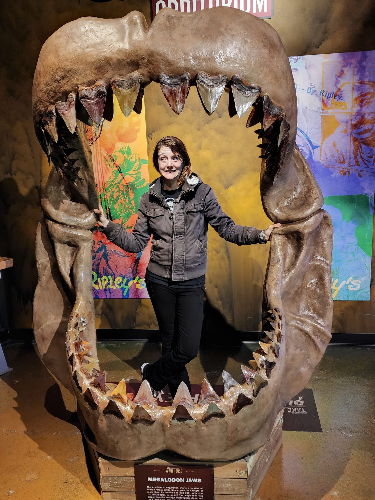
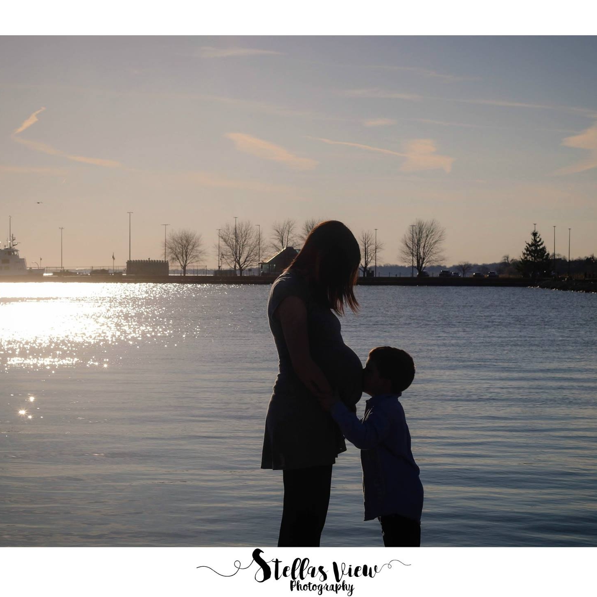

About Me
Hey there! I'm Amanda Buttineau, and I am from Ontario, Canada.
I began my coding journey roughly around the summer of 2022, when I decided I needed a change in my career and
I quickly realized how much I enjoyed creating websites. I am aiming to be a remote Web Developer working with
HTML5, CSS3, and Javascript.
CSS has to be my favorite web language so far. I love being able to see the webpage come to life with just a
few lines of code!
I guess you can technically say I am self-taught, as I have never gone to school for Computer Science, or any
of that. But most web developers these days are self-taught, and seeing how far they have gone in their career
gives me the motivation to keep going at it for myself!
Other than coding and endless learning, in my spare time I enjoy being outdoors, hiking through the bush,
hunting, fishing, and spending time with my family as well as my chickens, ducks and geese.
- 
- 
- 
- 
- 
- 